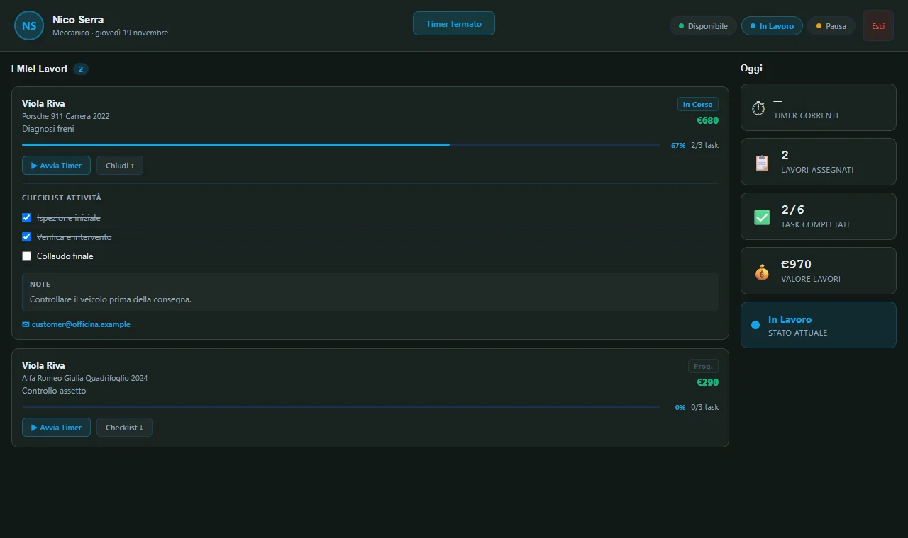
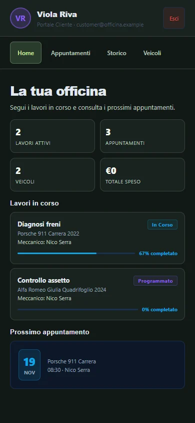

Engineering project · Runtime screenshot
Meccanico della Velocità
Explore manager, mechanic and customer views of a performance-car workshop.
Local portfolio demo
Public source access pending.
Run the local demo
From the prepared project checkout, run these commands and open the address printed by the server. The repository may require access.
cd meccanico-della-velocit-
npm ci --prefix web-dashboard
npm run dev --prefix web-dashboard -- --host 127.0.0.1 --strictPort

Problem
Workshop staff and customers need different views of bookings, repair tasks and vehicle progress.
Architecture
React and Vite render role-based demo views through a browser-storage data adapter. Connected Supabase mode, an Express API and an Expo client are separate integration paths.
Engineering decisions
- Keep a self-contained fictional-data adapter for the browser walkthrough.
- Normalize appointment and inventory records for the shared dashboard components.
Implemented workflow
- Use the manager role to book an appointment for the Porsche.
- Switch to mechanic, complete a checklist task and inspect the timer.
- Open the customer view and review the booking and owned vehicles.
Checks and evidence
Prepared application screenshots and the source README document this workflow. Application checks were not rerun during this portfolio update.
- Reviewed the source README and prepared screenshots in project-2026 on 25 November 2026.
Scope and next steps
- Browser role checks demonstrate the workflow and are not a security boundary.
- The mobile capture shows the responsive web view, not a native device run.
- Connected Supabase, Express and native integrations need their own configuration and verification.
Technology
React · Vite · Browser Storage · Express
Preview availability
Screenshots show the prepared local version. Hosted demos remain pending, and source access may require permission. Local setup requirements and remaining limits are documented above.
← Return to portfolio